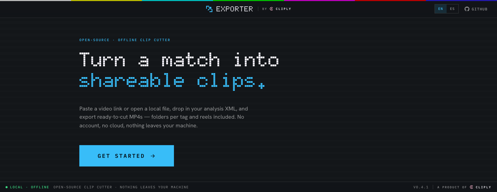

Open-source · 100% offline
Paste a YouTube link, drop in your SportsCode / Nacsport analysis XML, and export ready-to-cut MP4s — folders per tag and reels included. No account, no cloud, nothing leaves your machine.

Three steps, start to finished clips.
Any YouTube URL or video ID — downloaded locally with yt-dlp.
SportsCode / Nacsport tags become colored clips. No XML? Save the full match video.
MP4s in per-tag folders, plus reels. Stream-copy fast, or re-encode.
Everything runs on your machine. No sign-up, no upload, no telemetry.
Nothing leaves your computer. Works on the plane, on the bus, at the pitch.
Reads the colors and codes straight from your analysis XML.
One MP4 per clip in tidy per-tag folders, plus per-tag and combined reels.
Preview the full video, select exactly the clips you want, export.
Switch language any time. More welcome via pull request.
Apache-2.0. Powered by cliply's clip engine. Inspect it, fork it, ship it.
Cliply Exporter isn't notarized yet, so macOS blocks unsigned apps the first time. One-time fix:
Prefer Terminal? This clears the quarantine flag on any macOS version:
xattr -dr com.apple.quarantine "/Applications/Cliply Exporter.app"
Windows: on the SmartScreen prompt, click More info → Run anyway. On first launch the app downloads ffmpeg + yt-dlp from their official sources (checksum-verified).